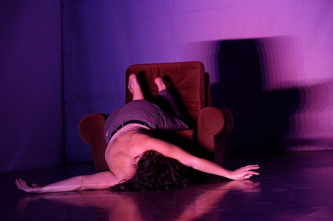
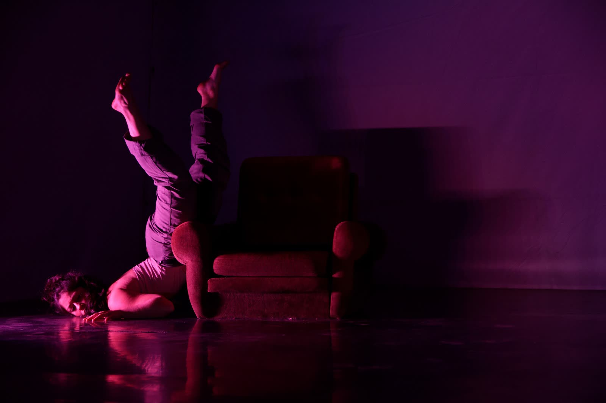

© Florian Astraudo
“When the bells don't chime” is a discovery of the human being when exposed to an emotional circumstance. How do we react? What do we do? What are the patterns of thought and actions? How many emotional layers do we have regarding one single situation?
Questions that are put on spot and researched by the performer in a journey shared with the audience.
Creation - Juliana Fernandes
Performance - Juliana Fernandes
Sound Design - Juliana Fernandes
Lights - Helder Cunha
Register - Florian Astraudo
Support - Performact
Festival Multiplicidades 2020


© Florian Astraudo